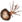
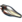

Deimos
- Wpis w Kodeksie - Nawet najbardziej zaawansowana kulturowo i technologicznie cywilizacja w historii nie mogła powstrzymać groźby Plagi. Po nieznanym, kataklizmicznym wydarzeniu, które wyrzuciło ich z Pustki, statki Orokin dryfowały, stając się niezamieszkane i zarośnięte. Niestrudzona siła sondowania zainfekowanych wąsów przenika i usuwa niegdyś majestatyczne i bogate sale tych statków Orokin.
- Surowce które występują na planecie:
 Nano Zarodniki
Nano Zarodniki-  Próbka Mutagenu
-  Ogniwo Orokin
 Neurody
Neurody
- Występujący boss: Lephantis i Zealoid Prelate
Fakcje i typy wrogów
 Plaga
Plaga- Taran
- Skoczek
- Wybuchowy Biegacz
- Rzygający Pełzacz
- Uzdrawiający Starożytny
- Zakłócający Starożytny
- Toksyczny Starożytny
- Juggernaut
- Vulpaphylas
- Predasite
- Kryptileksy
- Velocipods
- Avichaeas
- Undazoas
- Nexiferas